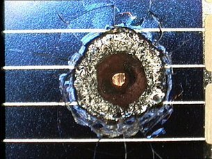
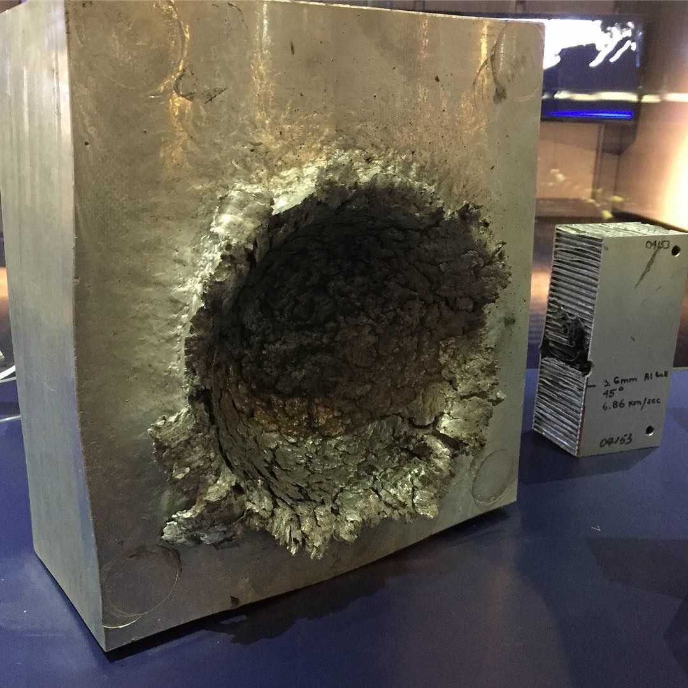
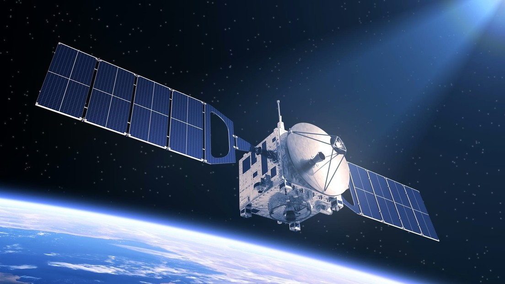
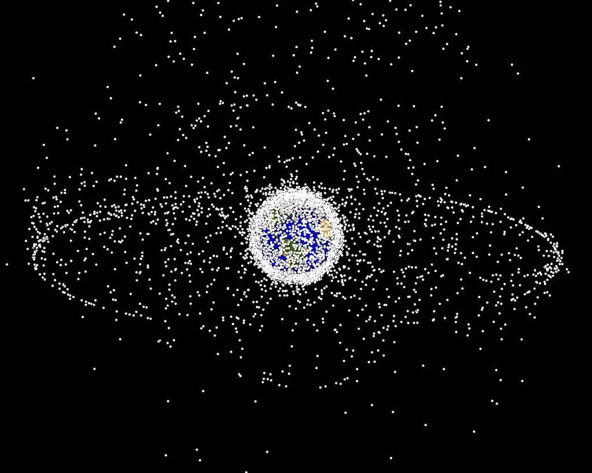
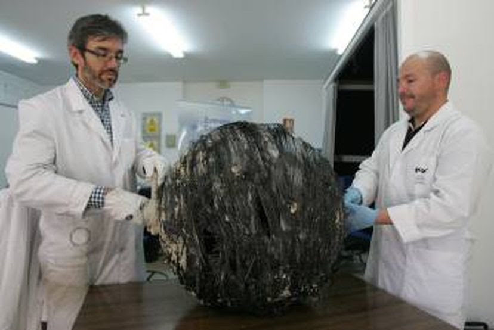

¿Qué es la basura espacial?
Es cualquier cosa creada por el humano dejada en el espacio que ya no tiene utilidad y orbita alrededor de la Tierra. Por ejemplo, pueden ser satélites que ya su vida útil terminó o residuos que miden milímetros. Hay un vertiginoso aumento desde que se empezó a explorar el cosmos, la Agencia Espacial Europea (ESA) calcula que existen 900,000 objetos de un centimetro y 34,000 de 10 centimetros orbitando el planeta.
Según la NASA, orbitan la Tierra unos 21.000 fragmentos de más de 10 centímetros, 500.000 de entre uno y 10 centímetros de diámetro, y más de 100 millones de partículas de menos de 1cm.
El humano no solo contamina la naturaleza sino que tambien llena de basura el espacio.

¿Por qué los deshechos espaciales son un peligro?
Los desechos orbitales se consideran un peligro ya que ponen en riesgo las comunicaciones terrestres según la ONU. Los impactos de estos escombros pueden inutilizar un satélite en funcionamiento o interrumpir una misión espacial impactando un cohete o nave. El problema que ahora mismo se tiene con la basura espacial es que hay explosiones en órbita por la energía (combustible y más cosas) sobrante que tienen estos restos y a la increíble velocidad con la que se desplazan causando choques accidentales. Aunque se han implementado medidas para evitar los impactos al pasar de los años, las colisiones no han bajado. Se están introduciendo mejoras para eliminar los materiales al finalizar las misiones pero todavía la aplicación continúa siendo lenta.
El tráfico fuera de nuestro planeta sigue creciendo y la masa, número y área de los deshechos orbitales es cada vez más mayor. Por eso, agencias como ESA o NASA están vigilando el progreso de estos escombros y lo tratan de controlar lo máximo posible. La vigilancia de los sistemas espaciales y el cumplimiento de las medidas de reducción de basura a nivel internacional son pieza fundamental para la eliminación y seguridad de los desechos en el espacio. Las nuevas naves y cohetes han intentado ajustarse a estas instrucciones para ya no contribuir a que la órbita del planeta Tierra se contamine.
 
Ejemplos de impactos de desechos con unos objetos orbitales
La importancia de la exploración espacial y los satélites
La exploración espacial ayuda a que los países colaboren entre sí, despierta la innovación en la mente humana y nos hace descubrir cosas impresionantes sobre nuestro mundo y el universo que nos rodea. La tecnología crece a pasos agigantados pues gracias a la ingeniería precisa y compleja de los aparatos que se lanzan al espacio es que se han podido crear cosas útiles para la humanidad.
Los satélites artificiales son indispensables para la ciencia, navegación (GPS), comunicaciones, metereología, estudio del espacio, observación del planeta Tierra y fines militares.

Información Importante
La cantidad de residuos que el hombre ha dejado es significativa desde el comienzo de la era espacial en el año 1957. El número sigue subiendo, las naves y etapas de cohetes que se han lanzado se han ido desintegrando en el cosmos. Cuanto más aparatos el hombre ponga en el espacio, más basura va a haber.
El área cada vez más mayor de la basura espacial aumenta la posibilidad de que pasen impactos.

No hay que pasar por alto que existen directrices y reglas internacionales que dicen cómo se puede lograr un uso responsable del espacio y asegurar la integridad de la exploración espacial. Una de estas es: alejar el equipo que ya no esté en funcionamiento de la órbita de los satélites operativos a través de la desorbitación o la traslación a una órbita cementerio. Ahora mismo no se tiene una solución definida para eliminar los desechos espaciales. No es igual retirar grandes piezas de un cohete o una nave o satélite entero a quitar objetos pequeños que giran en diferentes órbitas de la Tierra. Son muchas las propuestas para eliminar esta basura como robots espaciales y redes que capturen los escombros, pero no se ha visto que se haga algo para construirlos. Nada parece cambiar y sigue creciendo el inmenso vertedero flotante. Haciendo en un futuro que la órbita terrestre sea inutilizable por ser un recurso sobreexplotado por el humano. No obstante, hay una propuesta de la NASA que es un sistema de rayo láser de poca potencia ubicado en tierra que al estilo de Missile Command que destruiría los restos que flota en nuestra órbita. Esta idea resulta más viable que otras que se han presentado antes, el objetivo del proyecto es desacelerar levemente, modificando la órbita de los restos para que se quemen en la atmósfera de la Tierra al reentrar a alta velocidad. Este proyecto es diseñado por James Mason, del NASA Ames Research Center en Palo Alto.
En un reportaje del periódico EL PAÍS en el año 2018, dicen que alrededor de la tierra orbitan más de 7,000 toneladas de basura espacial. Ahí hay satélites enteros, fragmentos de explosiones y choques, piezas de cohetes y más.
También, en el 2015, cayeron residuos espaciales del cielo en distintos lugares de España, pero no solamente en ese año y país. En los últimos 50 años la caída de basura espacial ha sido continua. La NASA ha documentado una media de una pieza cada día. Y entre 50 y 100 toneladas de chatarra del espacio caída en la Tierra. Caen en el mar o en zonas poco pobladas como el desierto australiano, entre otros.

Los desechos se agrupan en dos regiones del cielo especialmente, las que ofrecen mejor ventaja para el funcionamiento de satélites. El 70% de la chatarra se ubica en una línea de espacio a 200 y 2,000 kilómetros de altura. Esa región se llama LEO, es la órbita baja que rodea el planeta. Además a 400 km de altura está la Estación Espacial Internacional. Pero aquí no solo el equipo puede salir afectado también las personas, si ocurre una colisión de un resto con la estación.
La velocidad que pueden alcanzar los escombros en la órbita LEO supera siete veces más a la de una bala, moviéndose a 8 km/s. Si uno de esos fragmentos colisiona con un satélite en funcionamiento, lo destrozaría.
La otra zona en la que se establece la basura espacial es en la órbita GEO, que queda más lejos de la Tierra a 36,000 km de altura. Acá hay una característica especial pues las naves que vuelan allí se quedan quietas respecto a un punto fijo al girar sincronizadamente con el planeta. Esta área es muy estimada para los satélites de telecomunicaciones. En la órbita GEO, no hay tanta basura y los satélites se tienen controlados.
Estas órbitas y otras regiones del espacio están bajo la supervisión de la la ONU, sin embargo, debido al carácter mandatorio de la normativa mundial, el futuro depende de las reglas que cada nación y agencia del mundo quiera implementar. Lo que si es fundamental es que el ámbito político intervenga ya que compañías grandes dedicadas a la tecnología en el espacio exterior como SpaceX planean lanzar mega redes de satélites de telecomunicaciones para que el mundo se una a través de la Red de banda ancha. Se colocarían en la órbita LEO porque la señal no es lenta en ir y volver. La probabilidad de colisiones cuando la multitud de satélites se posicionen en su respectivo sitio y amplíe sus filas aumentaría 50%.
Las colisiones ocurren todas las semanas, especialmente en las órbitas bajas. Los que operan los satélites definen los riesgos que están dispuestos a asumir porque en este panorama no hay certeza sino probabilidades.
Propuesta para eliminar los escombros espaciales